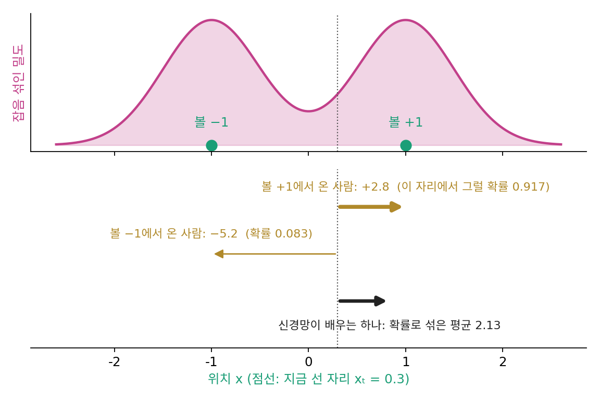

5장 — 잡음을 맞히는 신경망: DDPM과 잡음 제거 스코어 매칭
이 장의 물음
휴대폰 사진 앱의 「잡음 제거」 기능은 어두운 곳에서 찍어 자글자글한 사진을 매끈하게 바꿔 준다. 이런 기능을 만드는 쪽은 잡음 없는 원본과 잡음 낀 사진의 짝을 많이 모아야 한다. 그런데 짝을 모으는 가장 쉬운 길은 거꾸로 가는 것이다. 깨끗한 사진에 일부러 잡음을 섞으면, 섞기 전의 원본도, 섞은 잡음도 정확히 안다.
생성 모델이 처한 사정도 비슷하다. 모든 잡음 수준에서 스코어, 곧 로그 밀도가 가장 가파르게 오르는 방향을 알면 순수한 잡음에서 출발해 데이터로 걸어 돌아올 수 있다. 장난감에서는 데이터 분포를 식으로 알아서 그 방향을 계산할 수 있었다. 실제로 손에 있는 것은 그림 몇만 장뿐이다. 잡음 섞인 그림들의 분포도, 그 분포의 기울기도 모른다. 이 장은 다음 물음에 차례로 답한다.
- 정답 방향을 모르는데, 신경망에게 무엇을 맞히라고 시켜야 그 방향을 배울까?
- 방향을 직접 맞히는 것과, 섞은 잡음을 맞히는 것은 같은 일일까? 다르다면 어느 쪽이 배우기 쉬울까?
- VAE를 배울 때 올리던 「그림이 나올 확률의 아래쪽 경계」는 이 학습과 무슨 관계일까?
- 잡음 수준이 여럿이면, 수준마다 오차에 어떤 비중을 줘야 할까?
잡음 제거 스코어 매칭: 잡음을 섞어 본 기록으로 바늘을 배운다
거꾸로 걸으려면 모든 잡음 수준에서 바늘, 곧 스코어 s(x, t) = ∇ₓ log pt(x)가 있어야 한다. 이것을 신경망 sθ(x, t)에게 맡기고 싶다. 신경망을 배우는 익숙한 길은 정답과의 제곱 오차를 줄이는 것이다. 문제는 정답이 없다는 데 있다. 잡음 섞인 그림들의 분포 pt를 모르니 그 로그의 기울기도 모른다. 바늘을 만들려면 바늘의 정답이 있어야 하는 셈이다.
역사: 정규화 상수 없이 배우려던 시도
같은 막힘을 디퓨전 모델보다 먼저 겪은 사람들이 있다. 그림처럼 차원이 큰 데이터를 다루는 모델 가운데에는 밀도를 상수배까지만 적을 수 있는 것이 많다. 밀도의 합을 1로 맞추는 정규화 상수를 모르면, 모델이 데이터에 준 확률을 계산할 수 없어, 그 로그(로그우도)를 올리는 익숙한 학습이 막힌다. 아포 히바리넨(Aapo Hyvärinen)은 2005년 학술지 JMLR에 낸 「스코어 매칭으로 정규화하지 않은 통계 모델 추정하기(Estimation of Non-Normalized Statistical Models by Score Matching)」의 첫머리에서 그때의 처지를 이렇게 적었다. 이런 모델은 보통 마르코프 사슬 몬테카를로(무작위 걸음으로 표본을 뽑아 적분을 어림하는 방법)에 기대거나 정규화 상수를 근사해야 했다.
그의 제안은 모델의 로그 밀도 기울기와 데이터의 로그 밀도 기울기 사이의 제곱 거리를 줄이자는 것이었다. 기울기에는 정규화 상수가 들어 있지 않다. 남은 걸림돌은 데이터 쪽 기울기를 모른다는 것, 바로 앞에서 부딪힌 그 벽이었다. 히바리넨은 이 목표를 부분적분으로 바꿔 쓰면 데이터의 밀도가 식에서 사라지고, 모델의 로그 밀도를 미분한 값 몇 가지의 표본 평균만 남는다는 것을 증명했다. 대가가 있었다. 남은 식에는 로그 밀도를 좌표마다 두 번 미분한 값이 들어 있어서, 좌표가 수천 개인 신경망에서는 계산이 무거웠다.
몇 해 뒤 파스칼 뱅상(Pascal Vincent)은 전혀 다른 쪽에서 같은 자리에 닿았다. 그가 연구하던 것은 입력에 일부러 잡음을 섞고 원래 입력을 되살리도록 훈련하는 신경망, 잡음 제거 오토인코더였다. 2011년 학술지 Neural Computation에 실린 짧은 논문 「스코어 매칭과 잡음 제거 오토인코더의 연결(A Connection Between Score Matching and Denoising Autoencoders)」에서 그는 이 훈련 목표가 잡음으로 번진 데이터 분포에 대한 스코어 매칭과 같다는 것을 보였고, 이렇게 하면 두 번 미분이 필요 없다고 적었다. 정답 바늘을 모르는 문제를 「잡음을 섞어 본 기록」으로 푸는 길이 이렇게 열렸다.
레이더 제작법: 과거 대회의 기록
드래곤볼 레이더로 옮겨 보자. 주최 측은 드래곤볼(데이터가 몰린 봉우리)의 정확한 위치를 모른다. 가진 것은 과거 대회의 기록뿐이다. 기록 한 줄은 「이 볼에서 출발해 안개 속으로 이만큼 떠밀려 간 사람이 이 지점에 서 있었다」는 내용이다. 그 사람 한 명에게 돌아가는 방향은 분명하다. 자기가 떠나온 볼 쪽이다. 기록은 얼마든지 만들 수 있다. 그림 한 장을 고르고, 잡음을 뽑아 섞기만 하면 한 줄이 생긴다.
기록 한 줄은 데이터 점 x₀, 표준정규 잡음 ε, 잡음 크기 σt로 이루어지고, 그 사람이 선 자리는 xt = x₀ + σtε다. 이 사람에게 맞는 바늘은 x₀를 중심으로 한 가우시안 종의 로그 기울기, −(xt − x₀)/σt² = −ε/σt다. 이것을 정답 삼아 신경망을 훈련한다.
여기서 조심할 것이 있다. 타깃은 「이 사람은 x₀에서 왔다」를 알 때의 바늘이다. 신경망은 x₀를 보지 못하고 xt와 t만 본다. 같은 자리에 서로 다른 볼에서 온 사람들이 겹쳐 서 있으면, 신경망은 그들의 서로 다른 바늘에 하나로 답할 수밖에 없다. 그 하나는 무엇이 될까?
두 점 데이터로 확인하기
가장 단순한 데이터, −1과 +1 두 점(반반)에 σ = 0.5인 잡음을 섞는다. 자리 0.3에 선 사람은 +1에서 왔다면 바늘이 −(0.3 − 1)/0.25 = +2.8이고, −1에서 왔다면 −(0.3 + 1)/0.25 = −5.2다. 0.3에 서 있다는 것을 본 뒤에 +1에서 왔을 확률은 0.917이다.

기록을 많이 뽑아, 같은 자리 근처에 선 사람들의 타깃을 평균 내 보자. 그 평균을 잡음 섞인 분포의 참 스코어와 견준다. 이 장난감에서는 참 스코어를 (tanh(y/σ²) − y)/σ²로 손으로 적을 수 있다.
import numpy as np
rng = np.random.default_rng(0)
# 데이터: 두 점 ±1 (반반). 기록 한 줄 = (x0, ε) 를 뽑아 x_t = x0 + σ ε
sigma, n = 0.5, 4_000_000
x0 = rng.choice([-1.0, 1.0], n)
xt = x0 + sigma * rng.normal(size=n)
target = -(xt - x0) / sigma**2 # 조건부 타깃: 떠나온 점 쪽 바늘
def score(y): # 잡음 섞인 분포의 참 스코어(이 장난감에서만 안다)
return (np.tanh(y / sigma**2) - y) / sigma**2
for y in [0.0, 0.3, 1.0]: # (1) 같은 자리의 타깃을 평균 내면
near = np.abs(xt - y) < 0.02
print(f"y={y}: 조건부 타깃 평균 {target[near].mean():6.3f} 참 스코어 {score(y):6.3f}")
cands = {"0을 내놓는 신경망": lambda y: 0 * y, # (2) 손실 두 가지를 여러 후보로 견준다
"가우시안 스코어 −y/1.25": lambda y: -y / (1 + sigma**2),
"참 스코어의 0.8배": lambda y: 0.8 * score(y)}
for name, f in cands.items():
dsm = np.mean((f(xt) - target)**2) # 잡음 제거 스코어 매칭 손실 (기록만으로 계산)
true = np.mean((f(xt) - score(xt))**2) # 참 스코어와의 거리 (보통은 계산할 수 없음)
print(f"{name:16s} DSM {dsm:.4f} 참 스코어와의 거리 {true:.4f} 차 {dsm - true:.4f}")
# y=0.0: 조건부 타깃 평균 -0.028 참 스코어 0.000
# y=0.3: 조건부 타깃 평균 2.112 참 스코어 2.135
# y=1.0: 조건부 타깃 평균 -0.003 참 스코어 -0.003
# 0을 내놓는 신경망 DSM 3.9981 참 스코어와의 거리 2.9009 차 1.0972
# 가우시안 스코어 −y/1.25 DSM 3.2000 참 스코어와의 거리 2.1030 차 1.0970
# 참 스코어의 0.8배 DSM 1.2136 참 스코어와의 거리 0.1160 차 1.0976
(1)에서 자리 0.3의 타깃은 +2.8과 −5.2 두 값뿐인데 평균은 2.1이다. 0.917 × 2.8 + 0.083 × (−5.2) = 2.135가 참 스코어와 같고, 표본 값이 조금 작은 것은 0.3 둘레 폭 0.02의 칸에서 평균을 냈기 때문이다. (2)는 더 놀랍다. 어떤 후보를 넣든, 기록만으로 계산한 손실과 참 스코어와의 거리는 같은 상수(약 1.097)만큼 차이 난다. 상수는 신경망과 상관없으니, 기록으로 만든 손실을 줄이는 것은 참 스코어와의 거리를 줄이는 것과 똑같은 일이다.
까닭은 두 줄이다. 제곱 오차를 가장 작게 하는 하나의 답은 평균, 곧 「그 자리에 선 사람들의 타깃」의 조건부 기댓값이다. 그리고 그 평균은 트위디 공식(잡음 섞인 점에서 원래 점의 평균을 스코어로 구하는 식, E[x₀ ∣ xt] = xt + σt²s)을 바늘 쪽으로 다시 적은 것과 같다.
조건부 바늘들의 평균이 어느 볼에서 왔는지 모르는 채 모두 합친 분포의 바늘, 곧 참 스코어다. 정답 바늘을 한 번도 보지 않고, 잡음을 섞어 본 기록만으로 참 바늘을 배운다. 이 방법을 잡음 제거 스코어 매칭 (섞은 잡음을 되돌리는 바늘을 정답 삼아 스코어를 배우기 / denoising score matching)이라 한다. 앞으로 디퓨전 모델의 학습은 모두 이 생각 위에 선다.
ML에서: 학습 루프 한 바퀴
실제 학습은 이 기록 만들기를 미니배치마다 되풀이한다. 학습용 그림 한 장 x₀를 고르고, 잡음 수준 t를 고르고, 그림과 같은 크기의 표준정규 잡음 ε를 뽑아 섞은 xt를 신경망에 넣는다. 신경망의 출력과 타깃의 제곱 오차로 매개변수 θ를 한 걸음 고친다. 그림이 몇만 장뿐이어도 잡음은 매번 새로 뽑으므로 기록은 끝없이 생긴다. 송(Yang Song)과 에르몬(Stefano Ermon)의 2019년 모델처럼, 잡음 크기를 입력으로 함께 받는 신경망 하나가 모든 잡음 수준의 바늘을 맡는다.
문제 1. 우산을 몇 개 들여놓을까
편의점 점장이 내일 팔릴 우산 수를 숫자 하나로 어림해 본사에 보내야 한다. 내일 비가 올 확률은 30%이고, 비가 오면 100개, 안 오면 20개가 팔린다. 본사는 어림과 실제 판매량의 차이를 제곱해서 점수를 깎는다. (가) 어떤 숫자를 보내야 깎이는 점수의 기댓값이 가장 작은가? (나) 더 그럴듯한 쪽인 20개를 보내면 기댓값으로 얼마나 깎이는가?

비가 안 올 확률이 70%니까 20개죠. 그럴듯한 쪽을 고르는 게 맞잖아요.

20개를 보냈는데 비가 오면 얼마나 깎여요? 반대로 100개를 보냈는데 비가 안 오면요?
20개면 비 올 때 80개 차이의 제곱이라 6,400, 확률 30%를 곱하면 기댓값 1,920이에요. 100개면 안 올 때 6,400에 70%라 4,480이고요. 둘 다 꽤 크네요.
그럼 그 사이의 숫자는 어때요? 기댓값을 보내는 숫자 a의 식으로 적어 봐요.

0.3(100 − a)² + 0.7(20 − a)²이니까 a로 미분해서 0으로 놓으면 a = 0.3 × 100 + 0.7 × 20 = 44예요. 깎이는 기댓값은 0.3 × 56² + 0.7 × 24² = 1,344라서 20개보다 작아요.

44개는 실제로는 절대 안 나오는 판매량인데 그게 제일 덜 깎이네요. 한 번 크게 틀리는 것보다 양쪽으로 적당히 틀리는 게 제곱에서는 이득이구나.
답이 둘 중 하나로 갈리는데 어느 쪽인지 모르면, 제곱 오차는 둘을 확률로 섞은 값을 고르게 해요.
조별 과제 발표 날짜가 화요일일지 목요일일지 모를 때, 수요일까지 반쯤 해 두는 거랑 비슷하네요.
문제 2. 조건부 타깃과 참 바늘
데이터가 두 점 ±1(반반)이고 잡음 σ = 0.5를 섞는다. (가) 자리 xt = −0.2에 선 사람의 조건부 타깃 −(xt − x₀)/σ²는 어떤 값들을 가질 수 있는가? (나) 잡음 제거 스코어 매칭을 완벽하게 풀었을 때 신경망이 자리 −0.2에서 내놓는 값은? (풀어 본 뒤 위젯 1의 「문제 2 불러오기」로 확인해 보자.)
(가)는 x₀가 +1이면 −(−0.2 − 1)/0.25 = 4.8, −1이면 −(−0.2 + 1)/0.25 = −3.2예요. (나)는 우산 문제처럼 둘을 섞으면 되겠죠. 볼이 반반이니까 0.5 × 4.8 + 0.5 × (−3.2) = 0.8이에요.
0.8이면 바늘이 어느 쪽을 가리켜요? −0.2에서 가까운 볼은 어느 쪽이고요?

양수니까 오른쪽, +1 쪽이요. 그런데 −0.2는 −1에 더 가까운데… 이상하네요.
우산 문제에서 섞는 비율은 무엇이었어요? 「비가 올 확률」을 언제 알게 된 확률이었죠?

내일 날씨에 대해 지금 아는 확률이요. 여기서도 처음 볼이 반반이었던 게 아니라, −0.2에 서 있다는 걸 본 뒤의 확률로 섞어야 하네요. −0.2는 −1 쪽에 더 가까우니까 −1에서 온 사람이 더 많아요.
본 뒤의 확률은 두 가우시안 종의 높이를 견주면 돼. +1에서 왔을 확률 γ가 (1 + tanh(−0.2/0.25))/2 = 0.168이니까 0.168 × 4.8 + 0.832 × (−3.2) = −1.856이야. 참 스코어 (tanh(y/σ²) − y)/σ²에 넣어도 −1.856이고.

그래요. 한 사람에게 맞는 바늘과 신경망이 배우는 바늘은 달라요. 신경망은 그 자리에 설 수 있었던 모든 사람의 바늘을, 그 자리를 본 뒤의 확률로 섞어요.
확률론 수업에서 배운 「전체 확률의 법칙」을 평균에 쓴 거네요. 조건을 붙여 나눠 풀고, 그 조건의 확률로 다시 섞는 거요.
문제 3. 손실이 0까지 내려가지 않는다
데이터 두 점 ±1, 잡음 σ = 1 하나로 잡음 제거 스코어 매칭을 학습했다. 손실이 0.45 근처에서 더 내려가지 않는다. 늘 0을 내놓는 신경망의 손실은 1.00이다. (가) 학습이 덜 된 것인가? 가장 잘 배운 신경망의 손실은 얼마인가? (나) 같은 데이터에서 σ = 0.1이면 그 최솟값은 얼마인가? (다) 잡음 수준마다 손실 값을 그대로 견주면 무엇이 틀리는가?
손실이 0이 될 때까지 더 돌려야죠. 신경망을 키우거나 학습률을 바꿔 볼게요.
자리 0에 선 사람들의 타깃부터 봐요. 몇 가지 값이 있어요?

+1에서 왔으면 −(0 − 1)/1 = +1, −1에서 왔으면 −1이요. 0은 한가운데라 반반이고요. 그러면 신경망은 0을 내놓을 수밖에 없고, 오차 제곱은 어느 쪽이든 1이에요. 아무리 키워도 이 자리에서는 1을 못 줄이네요.

그러면 손실의 최솟값은 자리마다 「그 자리에서 타깃이 흔들리는 정도」, 곧 조건부 분산을 평균 낸 거야. 타깃은 −(xt − x₀)/σ²라서 흔들리는 건 x₀뿐이고, 그 분산을 σ⁴로 나누면 돼. ±1 데이터에서 x₀의 조건부 분산은 1 − tanh²(xt/σ²)이고, 이걸 표본으로 평균 내면 0.450이야. 학습은 다 된 거야.
(나)는 계산하기 전에 짐작해 봐요. 잡음이 0.1이면 자리를 보고 어느 볼에서 왔는지 얼마나 확실해요?
볼 사이가 2인데 잡음이 0.1이면 거의 확실해요. 조건부 분산이 0에 가까우니까 최솟값도 0에 붙어요. 실제로 계산하면 0.0000이고, 0을 내놓는 신경망의 손실은 1/σ² = 100이에요.
(다)는 그럼, 손실 0.45가 나쁜 숫자가 아니었던 거네요. 잡음 수준마다 최솟값도 다르고 처음 높이도 1/σ²로 다르니까, 숫자 그대로 「σ = 1이 σ = 0.1보다 못 배웠다」고 하면 틀려요. σ = 2면 최솟값 0.050, 처음 0.25라서 또 다르고요.

그래요. 손실 곡선은 같은 잡음 수준끼리, 최솟값을 뺀 뒤에 견줘야 해요.
조교님이 반마다 시험 난이도가 다르니까 원점수 말고 평균과 견줘서 보라고 하신 게 그 얘기였네요.